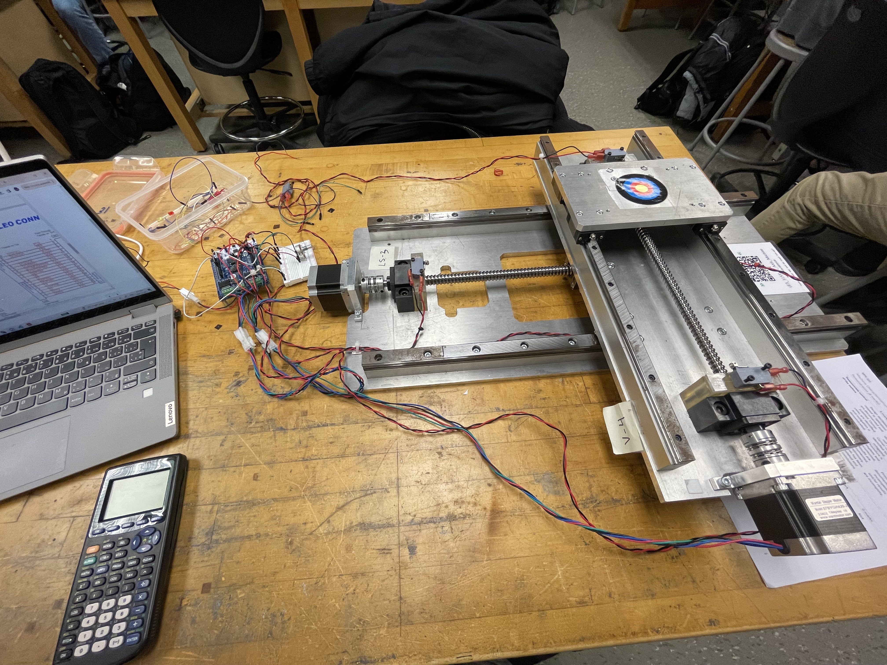
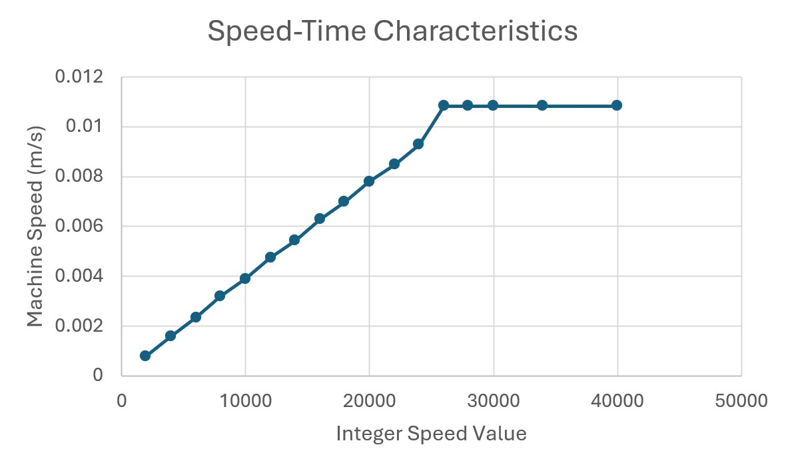

Two-Axis Machine
This project focuses on learning about building a simple embedded system and understanding how to bring
projects to life with a Nucleo STM32 microcontroller.
As a group, we were working with fairly old hardware, only having a motor shield for the microcontroller,
a borrowed power supply, a few stepper motors, and a few finicky switches/potentiometers, but we made it
work. That's part of the experience! The mechanical setup of the project was primarily borrowed from the
university, giving us more freedom to learn about integrating an embedded systems from a controls and
hardware perspective.
Microcontoller Implementation

The goal of this project was to implement a microcontoller to (control) the machine to move anywhere along
a 2D-plane. As failsafes, the switches were used to set the physical boundaries of the motor and board. It
was decided that this would be a better implementation than using the stepper motor to calculate the
location as offsets accumulated over time may be difficult to account for. The potentiometer would be used
to control the speed and direction along one axis while another switch would be used to control the direction.
This was an intentional design choice as it can be difficult to safely operate the motors with multiple
potentiometers.
The first step was to test the hardware, making sure everything works to some degree. Generally, this is a good idea to avoid any headaches and unexpected behaviours later on. This was accomplished by using an oscilloscope, a wave generator, and a multimeter. Then we proceeded with figuring out the interrupts and interrupt handler for the step motors. To do this, we connected a GPIO pin to the 3.3 volt pin with a normally-closed switch and configured it as a pull-down resistor. Subsequently, when the switch breaks the circuit, it's programmed to fire an interrupt signal to the interrupt handler. The handler will then perform the corresponding executable to drive an LED. Ultimately, this test helps to provide the framework for how the limit switch interrupts will work; when a switch is triggered, fire off the interrupt.
The first step was to test the hardware, making sure everything works to some degree. Generally, this is a good idea to avoid any headaches and unexpected behaviours later on. This was accomplished by using an oscilloscope, a wave generator, and a multimeter. Then we proceeded with figuring out the interrupts and interrupt handler for the step motors. To do this, we connected a GPIO pin to the 3.3 volt pin with a normally-closed switch and configured it as a pull-down resistor. Subsequently, when the switch breaks the circuit, it's programmed to fire an interrupt signal to the interrupt handler. The handler will then perform the corresponding executable to drive an LED. Ultimately, this test helps to provide the framework for how the limit switch interrupts will work; when a switch is triggered, fire off the interrupt.
Motor Characterization

The 3.3 volt pin on the microcontroller is connected to a potentiometer and then to the input pin for setting
the speed. With the step motors, an integer can be set through the microcontoller to control the speed. The
issue with this is that this value is arbitrary to us until we can characterize and map the integer value to
a speed. Additionally, it is important to also find the integer associated with the maximum speed as this
information allows us to map the speed of the motor to the input voltage range.
Machine Logic